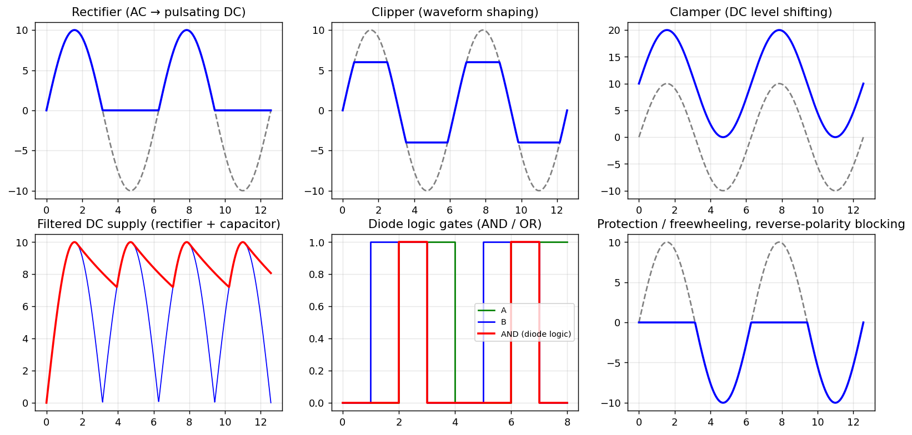

A-Q5 — Applications of Diodes
EE1100diodestutorial-solution
Hub: Tutorial 5 on Diode Circuits and Applications · Previous: A-Q4 - Bias, Cut-in Voltage, Saturation Current and Resistance · Next: A-Q6 - Rectifier Circuits and Waveforms
Write down the important applications of diodes.
1. List of applications
| Application | Principle | Where it appears in this tutorial |
|---|---|---|
| Rectification (AC → DC) in power supplies and chargers | one-way conduction | A-Q6 - Rectifier Circuits and Waveforms, B-Q8 - Half-Wave Rectifier with Series Resistor, B-Q11 - Full-Wave Rectifier with Battery |
| Filtered DC supplies | rectifier + capacitor | A-Q8 - Half-Wave Rectifier Filter Capacitor, A-Q9 - Full-Wave Rectifier Filter Capacitor |
| Clipping / limiting (waveform shaping, signal protection) | diode + reference turns ON above a threshold | B-Q3 - Series Battery Rectifier, B-Q10 - Two-Level Clipper, B-Q9 - Battery Charging Rectifier Circuit |
| Clamping / DC restoration | capacitor charged by a diode shifts the DC level | B-Q6 - Diode Clamper |
| Voltage multipliers | diodes steer charge onto capacitors in turn | B-Q12 - Voltage Doubler |
| Logic gates (diode AND/OR) | highest / lowest input dominates | B-Q2 - Diode OR Gate, B-Q4 - Diode AND Gate, B-Q5 - Ideal Diodes with Negative Reference |
| Voltage regulation | Zener diode in breakdown holds a constant voltage | see A-Q3 - V-I Characteristics of a p-n Diode |
| Reverse-polarity and over-voltage protection | a diode blocks reversed supply; a diode across a relay coil absorbs the inductive kick (freewheeling) | — |
| Demodulation (detector) of AM signals | envelope detector = rectifier + RC | — |
| Light emitting diodes, photodiodes, solar cells | recombination emits light; absorbed photons create | — |
| Switching, mixers, varactor tuning, temperature sensing | of a reverse-biased junction; mV/°C | — |
2. Examples of the waveform operations

Why diodes are so widely used
A p-n junction is a cheap, small, robust, voltage-controlled one-way valve: very low resistance in the forward direction, very high in the reverse direction, and a fixed voltage drop of about 0.7 V (Si) when conducting.